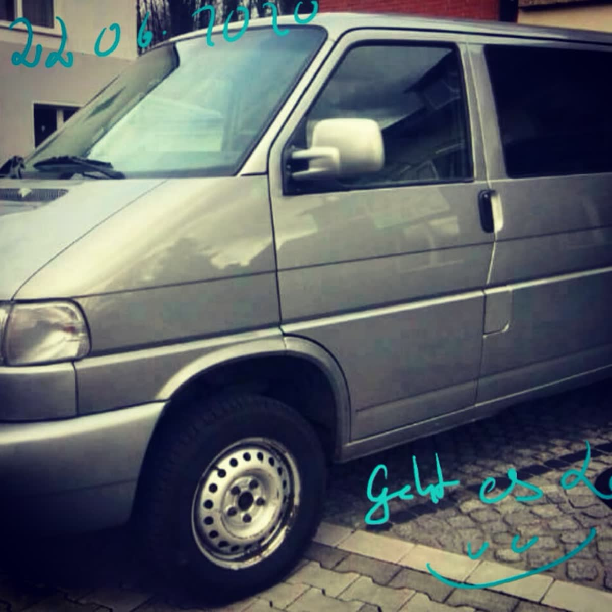
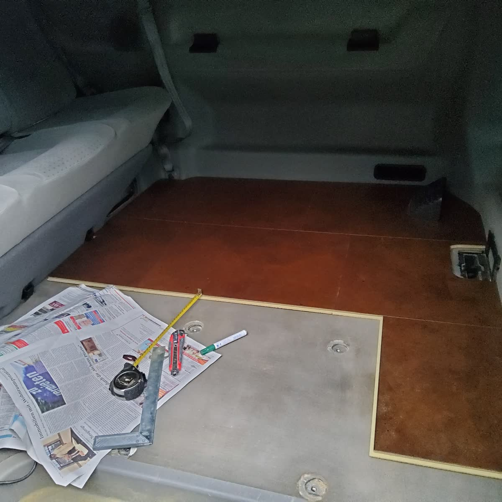
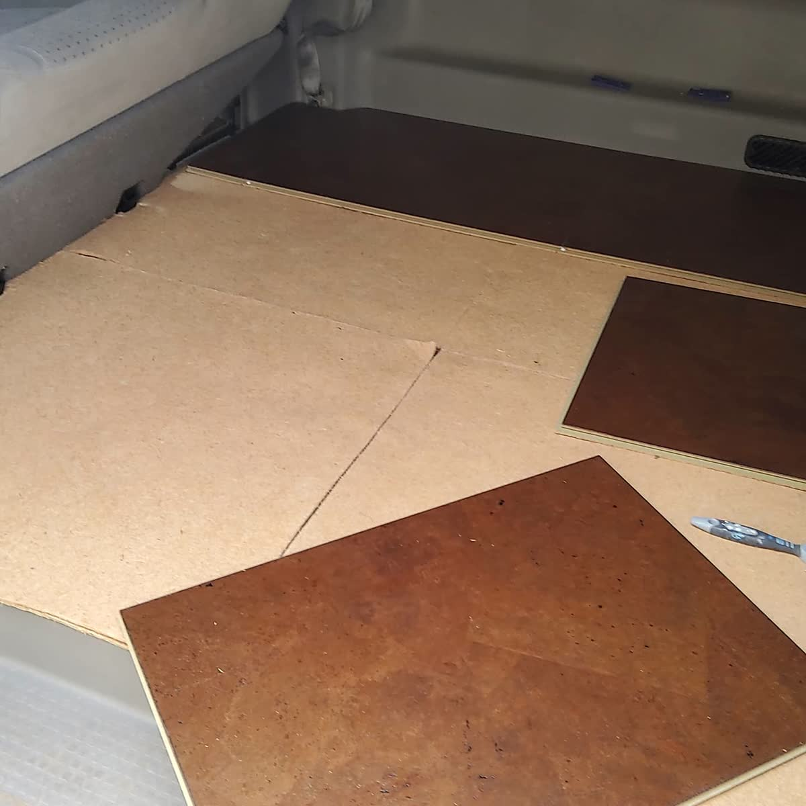
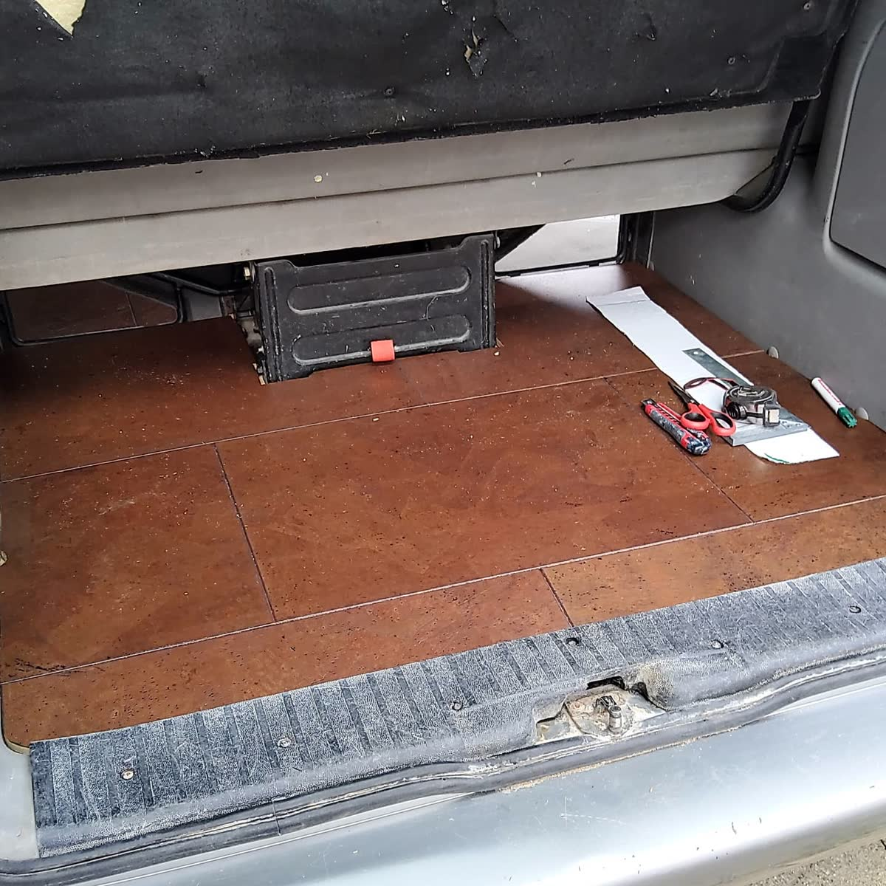
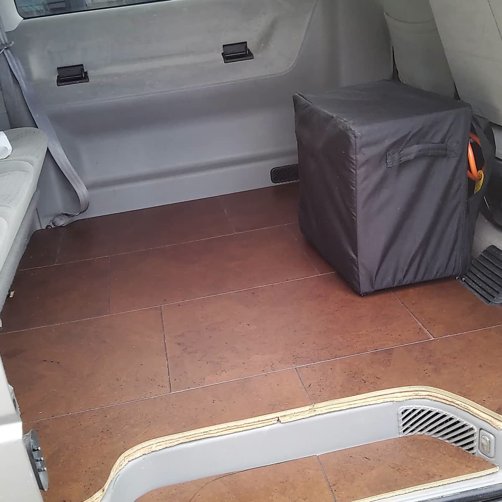

So habe ich den Fußboden gebaut — mein allererster T4
Hallo, hier ist Justine aus dem Tussy Van! 💛 Heute nehme ich euch mit ganz an den Anfang — zu meinem allerersten T4, dem silbernen VR6. Mit ihm hat meine Vanlife-Geschichte begonnen, und der erste richtig große Ausbauschritt war der Fußboden. Klingt unspektakulär? Ist aber das Fundament für alles, was danach kommt — und ehrlich gesagt der Moment, in dem aus einem Transporter langsam mein Zuhause wurde.

Ein VW T4 Caravelle, Baujahr 1998, mit VR6-Motor und Dachträger obendrauf. Von außen ein unscheinbarer silberner Bus — innen ein weißes Blatt Papier, das nur darauf wartete, zu meinem rollenden Zuhause zu werden.
Schritt 1: Schablonen, Schablonen, Schablonen
Der T4-Boden ist alles andere als ein simpler Rechteck-Kasten: Radkästen, Sitzschienen, Schwellerkanten und die schräge Heckpartie machen jede gerade Platte zunichte. Mein wichtigster Tipp gleich zu Beginn: Nimm dir Zeit für die Schablonen. Ich habe mit alten Zeitungen und Pappe gearbeitet, sie Stück für Stück auf den Boden gelegt, an den Kanten umgeknickt und die Konturen abgezeichnet. So bekommt man auch die krummsten Ecken sauber aufs Papier.

Schritt 2: Übertragen und zuschneiden
Die Papp-Schablonen habe ich anschließend auf die Platten übertragen. Ich habe mit dünnen, stabilen Hartfaser-/Sperrholzplatten gearbeitet — leicht genug, um das Gewicht nicht in die Höhe zu treiben, aber stabil genug zum Draufstehen und -knien. Kontur anzeichnen, mit dem Cutter (bei dünnem Material) bzw. der Stichsäge ausschneiden, an der echten Kante testen, nachschleifen. Lieber ein-, zweimal mehr anpassen als eine Platte verschenken.

Schritt 3: In Segmenten arbeiten
Ich habe den Boden bewusst nicht aus einer einzigen Riesenplatte gebaut, sondern aus mehreren Segmenten. Das hat gleich zwei Vorteile: Man bekommt die Teile überhaupt erst durch die Schiebetür ins Auto, und einzelne Bereiche (z. B. über Staufächern oder der Batterie) bleiben zugänglich. An der Heckklappe habe ich sauber bis zur Kante gearbeitet, damit später nichts wackelt oder hochsteht.

Schritt 4: Der Fliesen-Look kommt drauf
Auf die Trägerplatten kam mein Lieblings-Detail: ein Bodenbelag im warmen Fliesen-/Terrakotta-Look. Der macht optisch sofort etwas her, ist pflegeleicht (einmal drüberwischen — fertig) und robust gegen Sand, Matsch und nasse Schuhe. Genau das, was man im Vanlife-Alltag braucht.

- Schablonen aus Pappe/Zeitung sparen dir teure Fehlschnitte.
- In Segmenten bauen — passt durch die Tür und bleibt zugänglich.
- Lieber leichtes, stabiles Plattenmaterial als schwere Bohlen.
- Belag im Fliesen-Look = pflegeleicht und robust für Sand & Matsch.
Die konkreten Produktlinks (teils Werbung/Affiliate) ergänze ich hier in Kürze.
Dieser Boden war der erste Schritt in einem Bus, der mich durch unzählige Abenteuer getragen hat. Wie es mit dem VR6 innen weiterging — Wasserstation, Trockentrenntoilette und Strom ohne Solar — liest du in „Der T4 VR6 als Alltags-Camper“.
Bis bald und immer gute Fahrt,
eure Tussy 💛